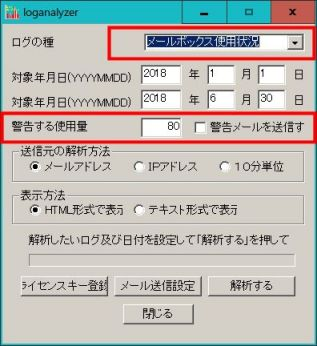
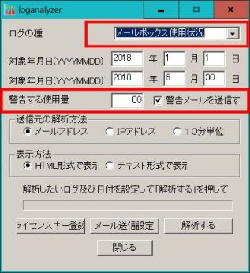
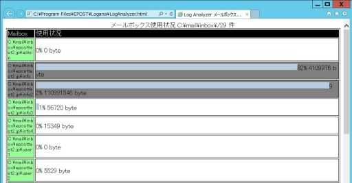
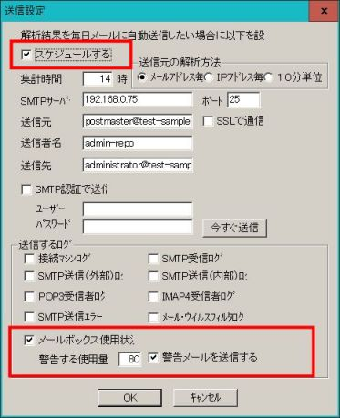
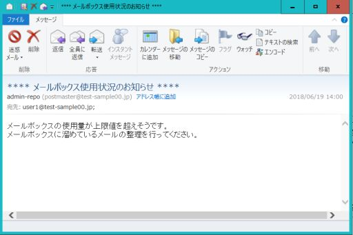
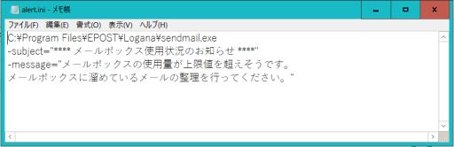

〔新機能〕メールボックス使用状況レポート機能およびユーザーへのメールボックス使用量警告メール機能
2018年7月分の差分アップデートプログラムでは、同時に付属ツール E-Post Loganalyzer が機能アップされた最新差分アップデートが公開されました。
このアップデートされた E-Post Loganalyzer を使うと、メールボックスサイズ制限を全体もしくは個別ユーザーに設定しているとき、管理者が全ユーザーのメールボックス容量の使用状況を確認できるようになりました。さらにまた、メールボックスサイズの設定されたしきい値に達したときにユーザーへの警告メールを自動送信する新機能が利用できるようになりました。これは、これまでユーザー様からの要望がかなりあったものを受けたものです。
- 必要な E-Post Loganalyzer 最新差分アップデート
以下が新機能を使うために必要な E-Post Loganalyzer 最新差分アップデートです。「サポート２」の「ダウンロード」−「カテゴリ：[32bit][64bit] Tool・Utility」を選び、日付の▽ボタンをクリックすることで降順に並び替え、以下のそれぞれの該当するモジュールをダウンロードしてください。適用方法はそれぞれの注意書きをご覧ください。
[64bit版]
◆64bit版シリーズ共通 E-Post Loganalyzer v1.07差分アップデートプログラム
（20181102差分） 掲載日:2018-11-08
[32bit版]
◆32bit版シリーズ共通 E-Post Loganalyzer v1.07差分アップデートプログラム
（20181102差分） 掲載日:2018-11-08
- メールボックス使用状況レポート機能について
メールボックス使用状況レポート機能を使う手順は次の通りです。
- E-Post Loganalyzer のメイン画面「ログの種別」から「メールボックス使用状況」を選択します。
- 対象年月日は任意の状態でかまいません。対象年月日の開始日終了日を入れている場合も入れていない場合も、あるいは両方が同じ日になっている場合でも、いずれの状態でもOKです。
- 「警告する使用量」を％単位で指定します。このとき「警告メールを送信」チェックボックスがオフになっているときは［解析する］ボタンをクリックしたときにメール送信しません。「警告メールを送信」チェックボックスがオンになっているとき［メール送信設定］の設定に基づいて［解析する］ボタンをクリックしたときに一緒にメール送信されます。つまりここでの「警告メールを送信」は自動的な定期送信でなく、手動タイミングによることになります。

「警告メールを送信」オフの場合−解析実行時にメール送信しない

「警告メールを送信」オンの場合−解析実行時に設定に基づいたメールが送信される
- 「送信元の解析方法」は「メールアドレス」を選択、「表示方法」は「HTML方式で表示」か「テキスト形式で表示」を選択します。
- ［解析する］ボタンをクリックし解析を実行します。
- 「HTML方式で表示」を選択して［解析する］ボタンで解析を実行した場合は、次のようなブラウザ内にグラフで表示されます。グレー表示になっているユーザーのメールボックスが、設定されたしきい値を超えているユーザーになります。

HTML方式で解析を実行するとブラウザ内にグラフで表示される
- ユーザーへのメールボックス使用量警告メール機能
- E-Post Loganalyzer のメイン画面「ログの種別」から［メール送信設定］をクリックすると「メール送信設定画面」が表示されるのを確認します。
- 「送信設定」上半分の画面では、警告メールを毎日送信するための必要項目について設定します。
スケジュールする：オン
集計時間：任意の時刻 ／ 集計元の解析方法：メールアドレス毎
SMTPサーバ：使用中のメールサーバかSMTPサーバ ／ ポート番号:25
送信元：任意アドレス
送信者名：任意名
送信先：任意アドレス
SMTP認証で送信：設定次第で任意
- 「送信設定」最下部分の画面では、警告メールを送信する条件などの設定を行います。
「メールボックス使用状況」チェックボックスをオン
「警告する使用量」を％単位で指定
「警告メールを送信」チェックボックスをオン

「メール送信設定画面」画面の例
- 設定が完了すると、決められた時間にしきい値を超えているユーザーに警告メールが送信されます。メールボックス使用量が100%を超えているユーザーにはメールは送信できませんので注意してください。E-Postの仕様や特性上、下記の ５.であげたような、ユーザーがよく認識しないうちにメールボックスが100%を超えてしまう事態になっている状況もあり得ます。メールサーバの仕様や特性をユーザーに認識してもらうのは非常に難しいと思いますので、このような事態にならないよう、日頃からシステム管理者がよく注意を払ってください。

送られてきた警告メール
- 警告メールの文面変更の設定
警告メールの文面設定を変更するには、Loganalyzer のインストールフォルダにある "alert.ini" ファイルを直接編集します。文字コードは、Windows標準のShift-JISで記述するようにしてください。エラーメール送信時に自動的にiso-2022-jp（JIS）に変換して送信します。

警告メール文面設定の "alert.ini" ファイル
- E-Postの仕様や特性上メールボックスが100%を超えてしまうケース
E-Postの仕様や特性上、以下の記事に取り上げたように、メールボックスが100%を超えてしまっている事態になっている状況が起こり得ます。当然ですが、このような状況になっていると Loganalyzer の機能で警告メールを送ろうとしてもメールボックスに届けることができません。くわしくは以下にあげたFAQ記事をご覧ください。
（関連FAQ）
●メールボックスの保管サイズ制限の対象外となるメール
●IMAP4使用時のメールボックスフォルダにメールボックス保管サイズ制限を超えてメールデータが格納される理由について
●Loganalyzerの新機能でユーザーへのメールボックス使用量警告メール機能のスケジュール変更しようとするとコマンドプロンプトがロックする場合
●Loganalyzerの新機能でユーザーへのメールボックス使用量警告メールのスケジュールが機能しないときのチェック項目